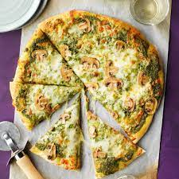

Describing:
A great alternative to your regular pizza.
Ingrediences:
- 1 (12 inch) pre-baked pizza crust
- ½ cup pesto
- 1 ripe tomato, chopped
- ½ cup green bell pepper, chopped
- 1 (2 ounce) can chopped black olives, drained
- ½ small red onion, chopped
Instructions:
- Preheat oven to 450 degrees F (230 degrees C).
- Spread pesto on pizza crust.
- Bake for 8 to 10 minutes, or until cheese is melted and browned.
A friend brought a version of this to a dinner party as an appetizer,
she also added a little mozarella and parmesan cheese, it was a hit!
It really looks pretty if you top it with the cheeses and then lay
big slices of fresh tomato over the top.